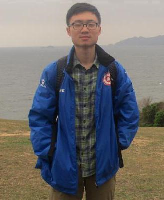

E-mail Address: shangjie_zou@foxmail.com
Phone: (+86)18819259935
South China Agricultural University (SCAU, ranked 79th in China's universities in 2019) Sep 2014– Jun 2018
Bachelor’s Degree in biotechnology (BSc)
GPA: 3.97/5.0 ; GPA Ranking in Major: 7 among 112 students
Chinese University of Hong Kong (Candidate) Sep 2019– July 2020
Master of Science in Biomedical Engineering
Conducted in Guangzhou Institute of Advanced Technology (GIAT)
Tutors: Prof. Chenli Liu, Dr. Jinming Cui. 06/2018
Tasks:
(1)Construct expression vectors and engineered phage for PACE (Mutagenesis plasmid, selection phage and accessory plasmid);
(2)Conduct continuous evolutionary experiments to improve LacY protein’s capacity of transporting specific substances;
(3)Evaluate the metabolic performance of evolved LacY by HPLC (high performance liquid chromatography).
My Contributions:
(1)Doing all kinds of experiments needed to complete the work.
Extracurricular project in SCAU
Tutors: Dr. Shengxiang Zhang (College of Mathematics and Informatics), Prof. Yu Sun (College of Life Sciences). 01/2018
Tasks:
(1)Construct a nested bidirectional long short term memory neural network (GL-BLSTM) by Keras;
(2)Utilize the GL-BLSTM model to predict disulfide bonding state of proteins (Dataset was obtained from PDB database, an open source database for protein structural data);
My Contributions:
(1)Cleaning data with python and making strategies for model training.
(2)Played the main role in article writing.
Article:
Junshu Jiang, Shangjie Zou, Yu Sun and Shengxiang Zhang. GL-BLSTM: A novel structure of bidirectional long-short term memory for disulfide bonding state prediction
Posted on arXiv preprint (arXiv:1808.03745[q-bio.QM]).
Final year thesis in SCAU
Tutor: Prof. Wei Huang (College of Life Sciences). 05/ 2017
Tasks:
(1)Design sgRNA which specifically targets to PRR5 in Arabidopsis thaliana and construct the vector of CRISPR-Cas9;
(2)Identify transformants and evaluate the effects of PRR5 by conducting quantitative real time polymerase chain
reaction (qRT-PCR) on genes that are expected to be regulated by PRR5;
(3)Analyse data by k-means clustering, Student’s T-test and ANOVA.
Extracurricular project in SCAU, awarded third prize in Guangdong "Challenge Cup" in 2017
Tutor: Prof. Haihong Wang (College of Life Sciences). 03/2015
Tasks:
(1)Design and construct a expression vector which consist of three genes and two promoters, including a transcription
factor, a reporter gene (GFP) and a fusion protein consist of a light sensor and a kinase;
(2)Transform the expression vector into bacteria and use light to control expression of target gene. Utilize fluorescence
microscopeto detect the expression of reporter gene;
My Contributions:
(1)Cooperate with three teammates, reading papers and finishing all the tasks.
Second Runner-up
Gold Prize
Best New Application Project
Best Plant Synthetic Biology
Best Education & Public Engagement
Gold Prize
Top 50
Third-class prize
Pacemaker to Merit Students (2016)
Excellent Graduate of South China Agricultural University (2018)
The Second-class University Scholarship (2018)
The Second-class University Scholarship (2017)
The First-class University Scholarship (2016)
The Second-class University Scholarship (2015)
Research Intern Research Center of Bioengineering, Shenzhen Institute of Advanced Technology (Nansha), CAS 06/2018-05/2019
Biology Teacher Zhong Hao Educational Technology Co., Ltd 08/2017-01/2018
English Proficiency: IELTS band 7.5 (Total)
Programming languages: Python, R
Statistical Software: SPSS